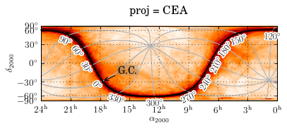
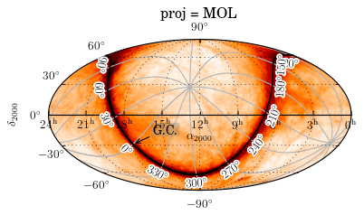

All-Sky Plot : WHAM¶
- requires svn version of matplotlib or future release
import matplotlib.pyplot as plt
import pyfits
from mpl_toolkits.axisartist.floating_axes import floatingaxes_class_factory
from pywcsgrid2.axes_wcs import GridHelperWcsFloating, AxesWcs
import matplotlib.axes as maxes
use_path_effects = True
try:
import matplotlib.patheffects
except ImportError:
use_path_effects = False
def allsky_header(proj):
# header retrieved from "lambda_mollweide_halpha_fwhm06_0512.fits"
header = """XTENSION= 'IMAGE ' / IMAGE extension
BITPIX = -32 / Number of bits per data pixel
NAXIS = 2 / Number of data axes
NAXIS1 = 4096 /
NAXIS2 = 2048 /
CTYPE1 = 'RA---%s' / Coordinate Type
CTYPE2 = 'DEC--%s' / Coordinate Type
EQUINOX = 2000.00 / Equinox of Ref. Coord.
CDELT1 = -0.0791293637247 / Degrees / Pixel
CDELT2 = 0.0791293637247 / Degrees / Pixel
CROTA2 = 0.00000 / Rotation Angle (Degrees)
CRPIX1 = 2048.50 / Reference Pixel in X
CRPIX2 = 1024.50 / Reference Pixel in Y
CRVAL1 = 180.00000000000 / Galactic longitude of reference pixel
CRVAL2 = 0.00000000000 / Galactic latitude of reference pixel
LONPOLE = 180.00000000000 / Native longitude of Galactic pole
LATPOLE = 90.00000000000 / Galactic latitude of native pole
""" % (proj, proj)
cards = pyfits.CardList()
for l in header.split("\n"):
card = pyfits.Card()
card.fromstring(l.strip())
cards.append(card)
h = pyfits.Header(cards)
return h
import pywcsgrid2.wcs_helper as wcs_helper
FloatingAxes = floatingaxes_class_factory(AxesWcs)
FloatingSubplot = maxes.subplot_class_factory(FloatingAxes)
def do_allsky(fig, rect, proj, dec_max, pseudo_cyl):
header = allsky_header(proj)
grid_helper = GridHelperWcsFloating(wcs=header,
extremes=(360, 0, -dec_max, dec_max),
)
ax = FloatingSubplot(fig, rect, grid_helper=grid_helper)
grid_helper.set_lon_ref(0)
grid_helper.set_ticklabel1_type("hms", nbins=9)
grid_helper.set_ticklabel2_type("dms", nbins=8)
ax.set_autoscale_on(False)
fig.add_subplot(ax)
if pseudo_cyl:
ax.axis["bottom", "top"].set_visible(False)
axis = ax.axis["left"]
axis.major_ticklabels._text_follow_ref_angle=False
axis.major_ticklabels.set(rotation=0,
va="center", ha="center",
pad=0)
#axis.label._text_follow_ref_angle=False
#axis.label.set(rotation=90, va="center", ha="right")
ax.axis["d=0"] = grid_helper.new_floating_axis(nth_coord=1, value=0,
axes=ax,
axis_direction='bottom')
axis = ax.axis["d=0"]
axis.get_helper().set_extremes(0, 360)
axis.set_ticklabel_direction("-")
axis.set_axislabel_direction("-")
axis.label.set_text(r"$\alpha_{2000}$")
else:
ax.axis["top"].set_ticklabel_direction("+")
ax.axis["top"].set_axislabel_direction("+")
ax.axis["bottom"].set_ticklabel_direction("-")
ax.axis["bottom"].set_axislabel_direction("-")
ax.axis["bottom"].major_ticklabels.set_pad(6)
gh_gal = ax["gal"].get_grid_helper()
for d in range(0, 361, 30):
axis = gh_gal.new_floating_axis(nth_coord=0, value=d,
axes=ax,
axis_direction='bottom',
allsky=True)
ax.axis["a=%d" % d] = axis
axis.set_ticklabel_direction("-")
axis.set_axislabel_direction("-")
axis.toggle(all=False)
axis.get_helper().set_extremes(-90,90)
axis.line.set_color("0.7")
axis.set_zorder(2.)
gh_gal.locator_params(nbins=9)
axis = gh_gal.new_floating_axis(nth_coord=1, value=0,
axes=ax,
axis_direction='bottom',
allsky=True)
axis.set_ticklabel_direction("-")
axis.set_axislabel_direction("-")
axis.set_zorder(5.)
axis.toggle(all=False, ticklabels=True)
axis.line.set_linewidth(1.5)
ax.axis["b=0"] = axis
ef = matplotlib.patheffects.withStroke(foreground="w", linewidth=3)
axis.major_ticklabels.set_path_effects([ef])
ax.grid()
an1 = ax["gal"].annotate("G.C.", (0,0), xycoords="data",
xytext=(20, 10), textcoords="offset points",
ha="left",
arrowprops=dict(arrowstyle="->"),
bbox=dict(fc="0.5", ec="none", alpha=0.3))
return ax
proj_dec_max_pseudo_cyl_list = [("CYP", 90, False),
("CEA", 90, False),
("CAR", 90, False),
("MER", 75, False),
("SFL", 90, True),
("PAR", 90, True),
("MOL", 90, True)
]
for proj, dec_max, pseudo_cyl in proj_dec_max_pseudo_cyl_list:
fig = plt.figure()
ax = do_allsky(fig, 111, proj, dec_max, pseudo_cyl)
ax.set_title("proj = %s" % proj, position=(0.5, 1.1))
plt.show()
[source code, hires.png, pdf]
{kind=link}

[source code, hires.png, pdf]
{kind=link}

[source code, hires.png, pdf]
{kind=link}

[source code, hires.png, pdf]
{kind=link}

[source code, hires.png, pdf]
{kind=link}

[source code, hires.png, pdf]
{kind=link}

[source code, hires.png, pdf]
{kind=link}
